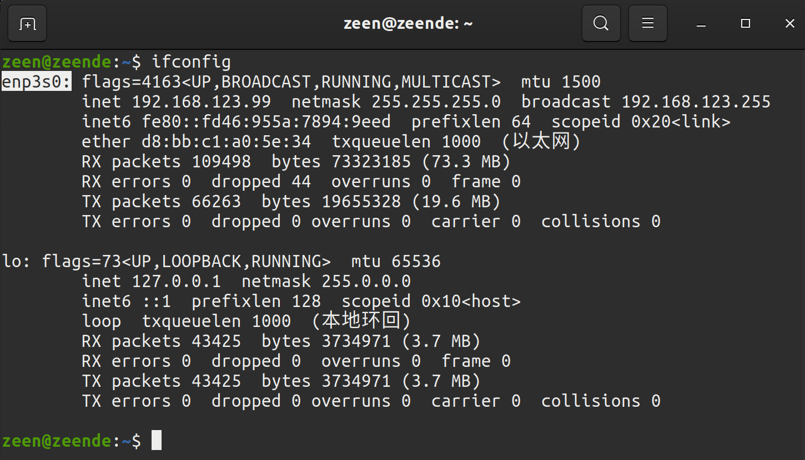
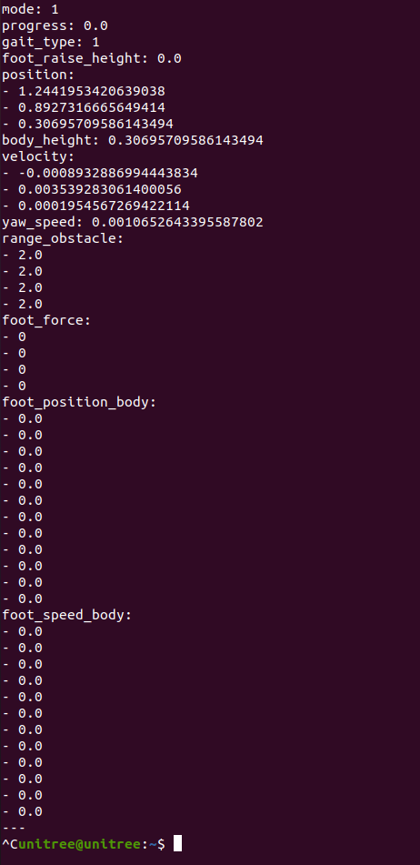
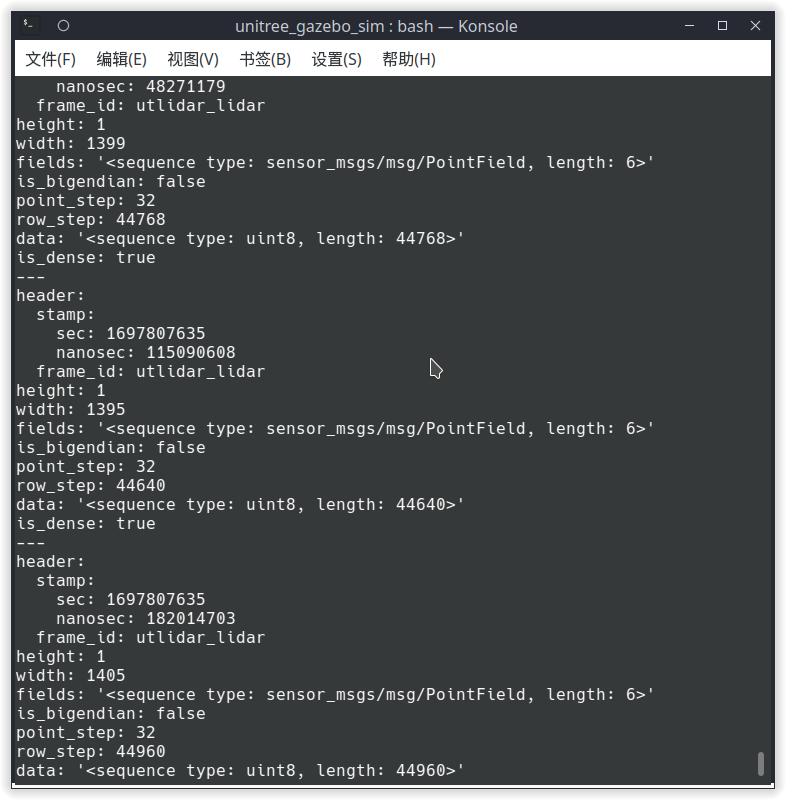
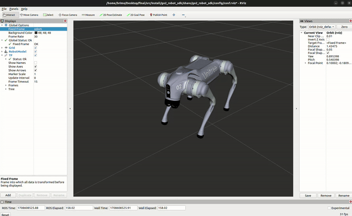

SDK 运动控制与巡检准备
融合理论「四足运动与巡检概述」：先认识 Go2 Edu 硬件与三类巡检任务，再安装 Unitree SDK 与 ROS2 驱动，用速度指令遥控前进转向、站起趴下、读回状态——验收标准：指令驱动四足运动正常。
01学习目标
- 说出 Go2 Edu 关键硬件：3D 激光雷达、深度相机、高清相机、足端力传感、Jetson Orin 40 TOPS 机载算力。
- 讲清三类巡检任务：表计读数、异常检测、自主巡逻回充，以及四足运动在其中承担的角色。
- 完成 Unitree SDK（Python）与 ROS2 Go2 驱动安装，跑通状态读取与运动示例。
- 用指令遥控四足前进、转向、站起、趴下，达到「指令驱动四足运动正常」的验收线。
- 牢记安全铁律：低速起步，避免跌落与碰撞，异常时先发停止/趴下指令。
02原理：四足运动与巡检概述（理论 1 融合）
把机器狗想像成一位厂区巡检员：四条腿是它的「交通工具」，身上的雷达和相机是「眼睛」，脑子是机载的 Jetson Orin。它要干的活就三样——抄表（对着表计拍一张，后面用 YOLO 认数字）、看异常（跑冒滴漏、烟火、异物）、自己巡逻自己充电（定时出门，见桩就回）。这三样任务的共同前提：狗得先听指挥、走得起、停得稳——这就是本实验要打通的运动控制层。
Go2 Edu 硬件清单与分工
| 部件 | 关键参数（培训方案「课程5」口径） | 在巡检中的角色 |
|---|---|---|
| 3D 激光雷达 | 多线激光（Mid-360 / XT16 级别），点云话题 utlidar/cloud | EXP-02 建图、EXP-03 定位避障的主传感器 |
| 深度相机 | 提供近距离深度信息 | 近障感知、台阶/沟坎辅助判断 |
| 高清相机 | 前置彩色相机，可 OpenCV 取帧 | EXP-04 拍照识别表计与异常的主相机 |
| 足端力传感 | 4 足触地力反馈（foot_force） | 步态落地检测、打滑与跌倒判断 |
| Jetson Orin | 40 TOPS 机载算力 | 边缘侧跑检测模型，弱网也不断巡检 |
四足运动能力：一个运动服务管所有动作
Go2 的运动不靠你直接拧电机——机上跑着一个运动服务（sport mode），你发「请求」，它负责步态平衡。订阅 /sportmodestate 话题能看到它的状态字典，其中两个字段最常读：mode（0=默认站立、1=平衡站立、3= locomotion 运动中、5=趴下、8=恢复站立……）与 gait_type（0=待机、1=trot 对角小跑、2=run、3=爬楼），外加 body_height、velocity、foot_force 等。控制侧走 /api/sport/request 话题发 unitree_api/msg/Request 请求——SDK 里的站立/趴下、速度移动、姿态控制，底层都是它。


ros2 topic list（来自 unitree_ros2 仓库 README）：sportmodestate、lowstate 等状态话题全部出现，说明 DDS 链路已通。03硬件与材料
| 检查项 | 标准 | 不达标后果 |
|---|---|---|
| 网络 | 网卡静态 IP 192.168.123.x，与狗互通 | DDS 发现不到机器人，topic list 为空 |
| 网卡名 | ifconfig 记下连接狗的接口名（如 enp3s0） | CYCLONEDDS_URI 指错口，通信时断时续 |
| 运动模式 | App 高层运动服务处于默认状态 | 与低压指令冲突，狗动作怪异 |
| 电量 | >50%，低于 30% 立即回充 | 低电保护中途趴窝，巡检中断 |
04操作步骤
网卡静态 IP → ping 通 → 确认网卡名
unitree_sdk2py 源码安装（cyclonedds 0.10.2）
unitree_ros2 编译 → source setup.sh
read_highstate / topic echo 双通道验证
站立趴下 → 速度指令低速起步 → 停止复位
- 配网：网线连接 Go2，网卡 IPv4 设静态（示例 192.168.123.99/24），
ifconfig记下接口名。 - 装 Python SDK：依赖 Python≥3.8、cyclonedds==0.10.2、numpy、opencv-python；源码方式
pip3 install -e .（找不到 cyclonedds 时先本地编译并导出 CYCLONEDDS_HOME）。 - 装 ROS2 驱动：克隆 unitree_ros2 → 安装 rmw_cyclonedds 依赖 → 编译 cyclonedds_ws 与 unitree_go/unitree_api 包 → 用 setup.sh 配置接口名与 RMW_IMPLEMENTATION。
- 验证链路：
ros2 topic echo /sportmodestate有数据滚动即通；无真机时用setup_local.sh（回环口 lo）跑本地流程。 - 运动序列：先 StandUpDown 站起 → VelocityMove 用最低速度档走直线与小半径转向 → 收到停止 → 趴下 → 回读状态确认 mode/gait 正常。
- 留痕：录下「指令-动作」对照视频或截图状态话题，作为「指令驱动四足运动正常」的验收证据。

ros2 topic echo /sportmodestate 实测输出（来自 unitreerobotics/unitree_ros2 仓库 README）：position、velocity、yaw_speed、gait、foot_force 随运动实时刷新——这就是验收时要看的「心跳」。
ros2 topic echo --no-arr /utlidar/cloud 查到 frame_id 为 utlidar_lidar（来自 unitree_ros2 仓库 README）——EXP-02 建图就靠这条话题。
05关键命令
以下命令均摘自 unitree_sdk2py 与 unitree_ros2 官方 README，网卡名按实机替换。
# ① 安装 Python SDK（依赖 cyclonedds==0.10.2 / numpy / opencv-python） git clone https://github.com/unitreerobotics/unitree_sdk2py.git cd unitree_sdk2py && pip3 install -e . # ② 读高层状态（enp2s0 换成连接机器狗的网卡名） python3 ./example/high_level/read_highstate.py enp2s0 # ③ 运动测试：站立/趴下、速度控制、姿态控制（择一放开注释） python3 ./example/high_level/sportmode_test.py enp2s0 # test.StandUpDown() 站立与趴下 # test.VelocityMove() 速度控制（低速起步！） # test.BalanceAttitude() 姿态控制 # ④ ROS2 侧：source 环境后验证状态与状态机 source ~/unitree_ros2/setup.sh ros2 topic echo /sportmodestate # 运动状态：mode/gait/velocity ros2 topic echo /lowstate # 底层状态：关节、IMU、电池 ros2 topic echo /wirelesscontroller # 遥控器摇杆 lx/ly/rx/ry 与 keys # ⑤ 站立示例（example 工作空间编译后） cd ~/unitree_ros2/example && colcon build ./install/unitree_ros2_example/bin/go2_stand_example
06动画：步态相位与指令链路
07互动：步态相位步进器
把相位走完一圈你会发现：trot 每个瞬间只有对角两足着地，支撑域是一条线段，重心投影必须压在这条线上才稳——这就是四足机器人「走路要算数学」的直观版本。
08常见问题
09拓展阅读
- unitree_rl_gym（BSD-3）： Isaac Gym 里
train.py --task=go2_*训练步态策略——机器狗的「天生会走」其实是学出来的，与运动服务的「写死规则」对照着看。 - unitree_ros / robots/go2_description：官方 URDF 模型可进 RViz 看结构，但 Gazebo 仿真只支持底层关节、不支持完整行走——这是要讲清的局限，别指望仿真里遛狗。
- 宇树机载 unitree_slam / mid360_driver：官方闭源服务，课堂可演示其 App 建图效果，但不随课分发——与本课 slime/开源方案（EXP-02）形成对比。
- go2_ros2_sdk：一个 launch 集成 pointcloud_to_laserscan、slam_toolbox、Nav2、joy 遥控与 Foxglove，EXP-02/03 的主力底座。
- Unitree 官方开发者文档 sports_services / Basic_services：Request api_id 全表，做自定义指令（灯光、音量、避障开关）时回来查。